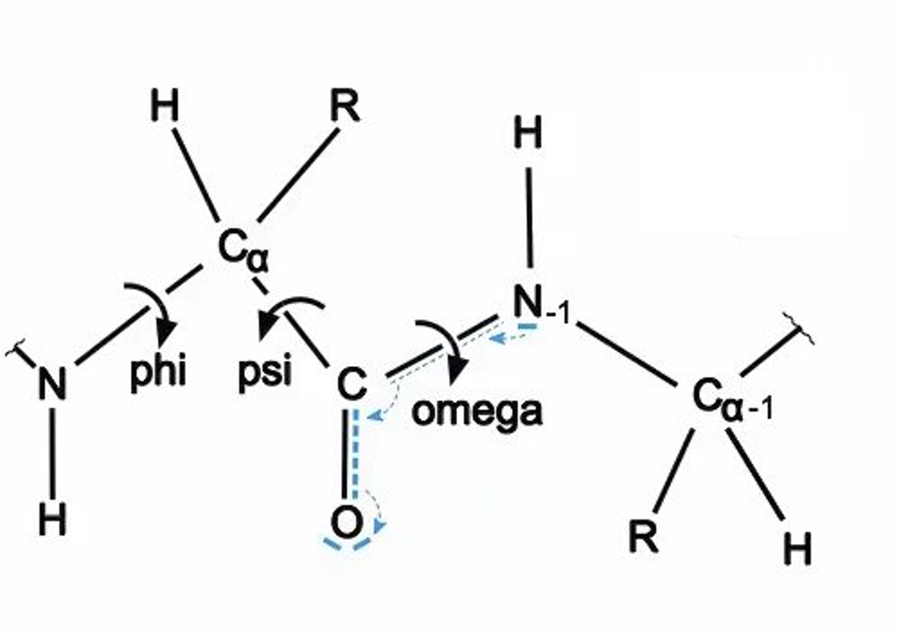

mindsponge.data.atom37_to_torsion_angles
- mindsponge.data.atom37_to_torsion_angles(aatype: np.ndarray, all_atom_pos: np.ndarray, all_atom_mask: np.ndarray, alt_torsions=False, is_multimer=False)[源代码]
计算每个残基的7个扭转角并且以正弦、余弦编码。7个扭转角的顺序分别是 [pre_omega, phi, psi, chi_1, chi_2, chi_3, chi_4]。这里 pre_omega 表示给定氨基酸与前一个氨基酸之间的扭转角， phi 表示氨基酸 C-CA-N-(C+1) 原子之间的扭转角， psi 表示氨基酸 (N-1)-C-CA-N 原子之间的扭转角。详细的参考下图：
 - 参数：
aatype (numpy.array) - 氨基酸类型。shape为 \((batch\_size, N_{res})\) 。
all_atom_pos (numpy.array) - 所有原子坐标的 atom37 编码下的表示。shape为 \((batch\_size, N_{res}, 37, 3)\) 。
all_atom_mask (numpy.array) - 所有原子坐标掩码的 atom37 编码下的表示。shape为 \((batch\_size, N_{res})\) 。
alt_torsions (bool) - 是否将屏蔽扭转角的标志角度设置为零。默认值：False。
is_multimer (bool) - 如果使用Multimer时该变量置为True。默认值：False。
- 返回：
字典。
torsion_angles_sin_cos (numpy.array) - 最后两维表示正弦、余弦编码结果。shape为 \((N_{res}, 7, 2)\) 。如果is_multimer为True，则shape为 \((N_{seq}, N_{res}, 7, 2)\) 。
alt_torsion_angles_sin_cos (numpy.array) - 对于手性氨基酸的所有 chi 扭转角，进行 pi 的平移。shape为 \((N_{res}, 7, 2)\) 。如果is_multimer为True，则shape为 \((N_{seq}, N_{res}, 7, 2)\) 。
torsion_angles_mask (numpy.array) - 掩码值表明需要显示的 chi 扭转角。shape为 \((N_{res}, 7)\) 。如果is_multimer为True，则shape为 \((N_{seq}, N_{res}, 7, 2)\) 。
- 支持平台：
AscendGPUCPU
样例：
>>> import numpy as np >>> from mindsponge.data.data_transform import atom37_to_torsion_angles >>> n_res = 16 >>> bs = 1 >>> aatype = np.random.randn(bs, n_res).astype(np.int32) >>> all_atom_pos = np.random.randn(bs, n_res, 37, 3).astype(np.float32) >>> all_atom_mask = np.random.randn(bs, n_res, 37).astype(np.float32) >>> angle_label_feature = atom37_to_torsion_angles(aatype, all_atom_pos, all_atom_mask) >>> print(angle_label_feature.keys()) dict_keys(['torsion_angles_sin_cos', 'alt_torsion_angles_sin_cos', 'torsion_angles_mask'])